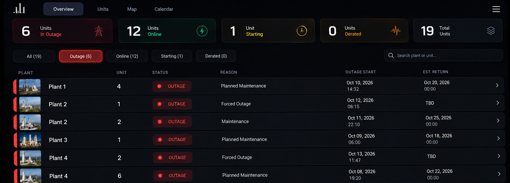
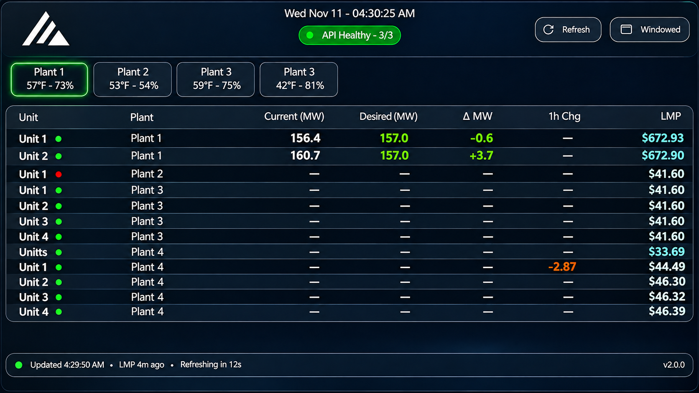
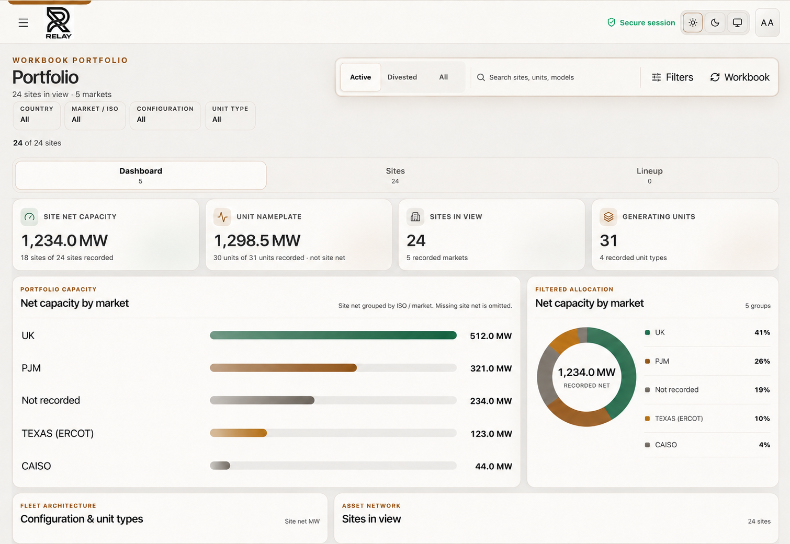
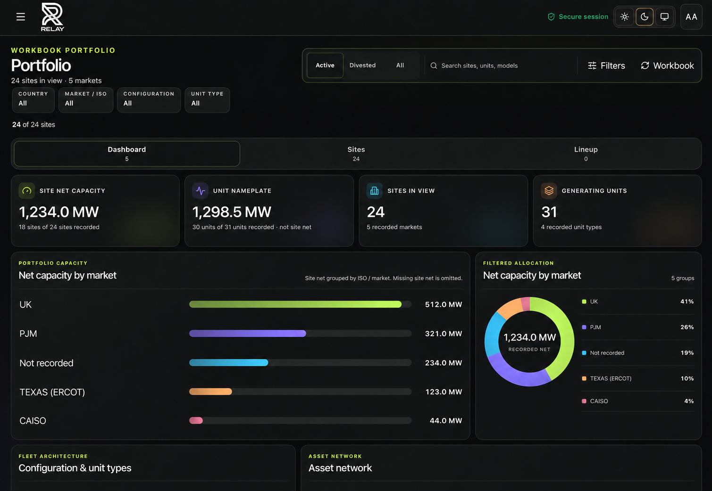
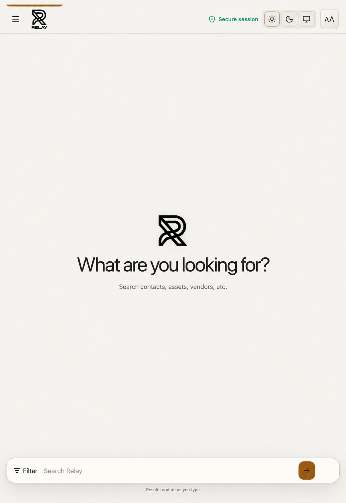
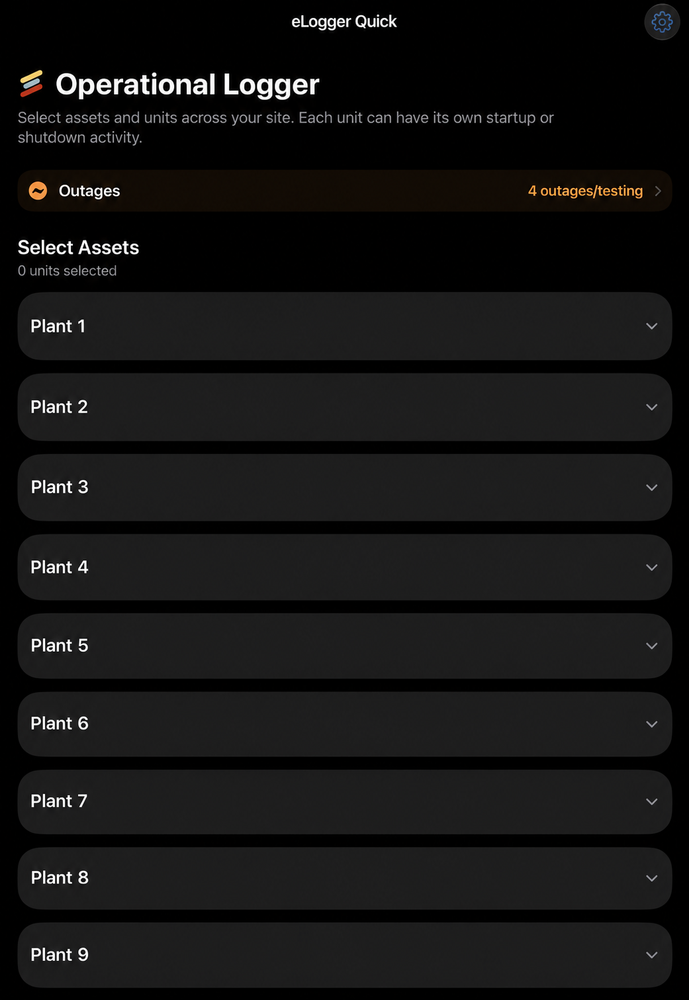
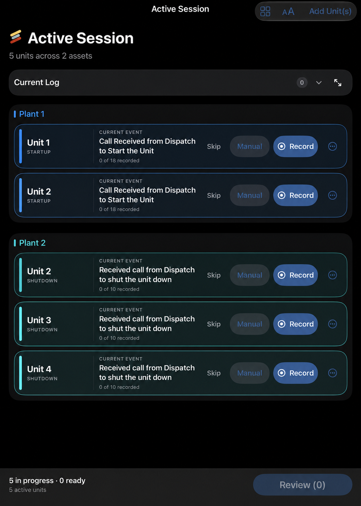
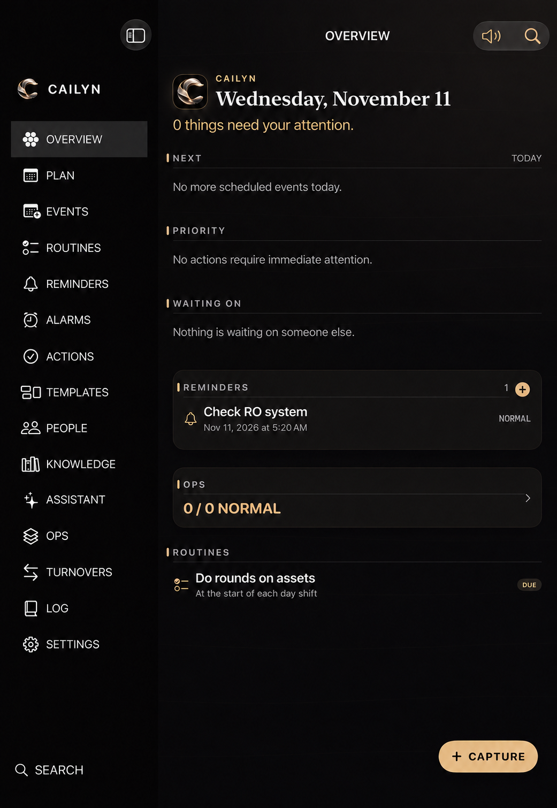

Power operations
Hands-on field and control-room experience with plant startups, shutdowns, monitoring, outages, and operational communication.
Digital résumé · Greater Houston Area
Operations Systems Professional
Power-generation operator, Remote Operations Center project coordinator, and independent software developer. I build every product shown in this portfolio myself.
I’m an operations systems professional whose career started in wind-turbine field work and progressed through gas-fired plant operations, Remote Operations Center development, and centralized generation operations. Along the way, I began building the dashboards, mobile workflows, and software I wanted operators to have.
Hands-on field and control-room experience with plant startups, shutdowns, monitoring, outages, and operational communication.
Coordinated facility, vendor, contractor, connectivity, IT, and digital-logbook work for a Remote Operations Center.
I independently design and build web applications, native iOS tools, dashboards, SaaS concepts, and AI-enabled software.
02 / Résumé
My work history from wind-turbine field service through plant operations, project development, and centralized operations systems.
Torkworx
Performed field torque and tension work supporting wind-turbine operations.
Temporary Assignment · IHI Power Services
Supported generation operations at Wharton County Generation, moving from an initial temporary assignment into a continuing plant role.
NAES · Wharton County Generation
Advanced to Technician II in April 2023. Operated gas-fired generation equipment and plant controls while communicating equipment conditions and operational issues.
IHI Power Services · Corporate
Coordinated a Remote Operations Center buildout spanning facility work, contractors, vendors, IT systems, connectivity, and digital logbook integration.
NAES · Remote Operations Center
Perform plant startups, ongoing operations, and shutdowns from a centralized control environment. Maintain outage records and operational communications while designing internal dashboards and workflow tools.
From operations to engineering
Everything below was independently conceived, designed, and developed from firsthand operating experience.
03 / Independent work
These projects are the technical side of my résumé. I independently handled the product thinking, interface design, and software development shown below.
Project 01
Independent design and development
I designed and built a widescreen operating view for monitoring unit status, outage reasons, expected returns, and fleet-level availability.

Project 02
Independent design and development
I designed and built a focused display for current and desired output, change over time, market signals, and API health across multiple plants.

Project 03
Independent design and development
I designed and built a responsive asset portfolio experience derived from structured workbook data, with capacity, market, configuration, and unit views.


Project 04
Independent design and development
I designed and built a secure, mobile-first workspace for finding contacts, assets, vendors, and operational information.

Project 05
Independent design and development
I designed and built a native iOS operating workflow for selecting units, recording startup and shutdown events, and organizing multiple activities in one session.


Project 06
Independent design and development
I designed and built Cailyn as a unified workspace for planning, routines, reminders, operational context, knowledge, and assistant capabilities.

04 / Skills
A combination of plant operations, project coordination, interface design, and software engineering.
Plant startup and shutdown · Centralized operations · DCS and alarm monitoring · Outage documentation · Operational communications
ROC coordination · Vendor and contractor management · Facility integration · Digital logbooks · IT and ISP coordination
Interface systems · Mobile workflows · Dashboards · Asset tracking · Reporting tools · AI assistant prototypes
Swift · SwiftUI · Python · JavaScript · TypeScript · React · Next.js · REST APIs · Git · GitHub
05 / Contact
Available for conversations about operations technology, internal software, product development, and power-generation systems.